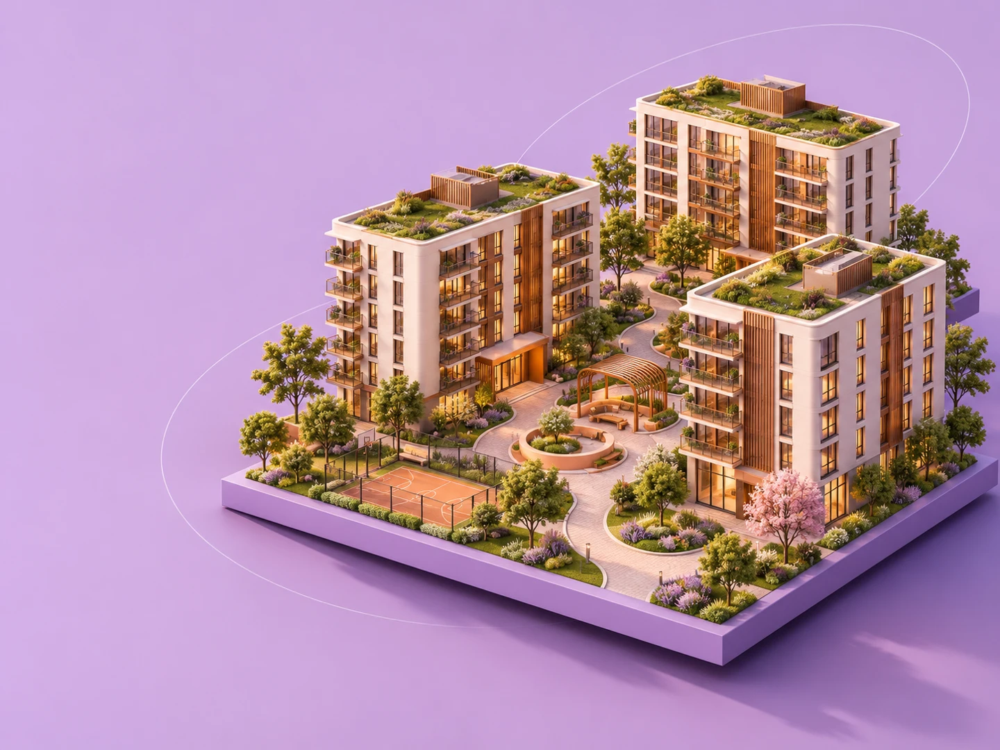
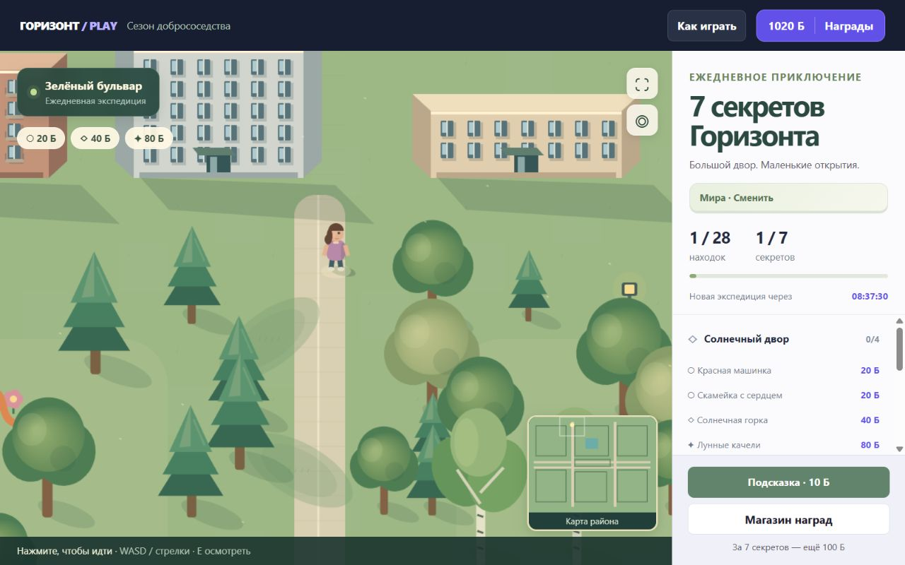
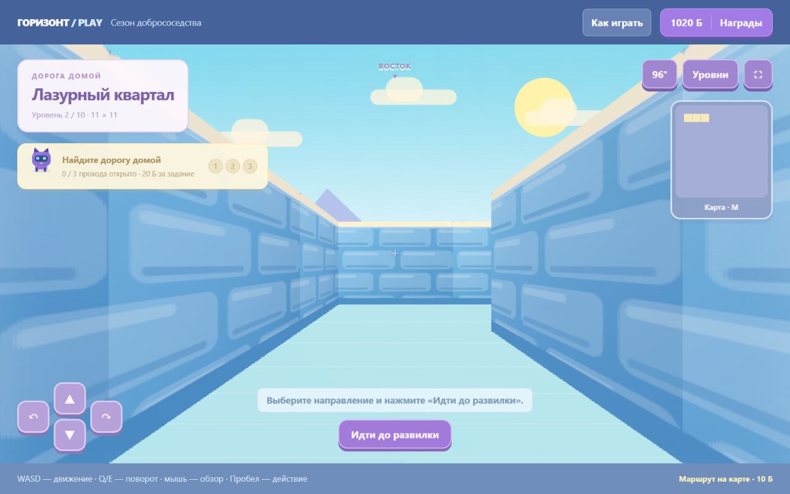
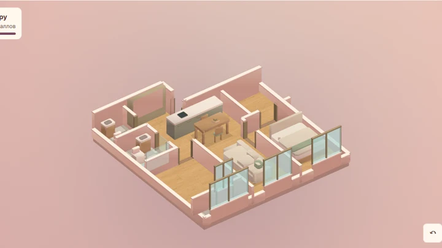
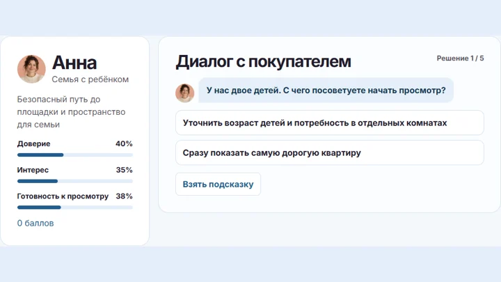
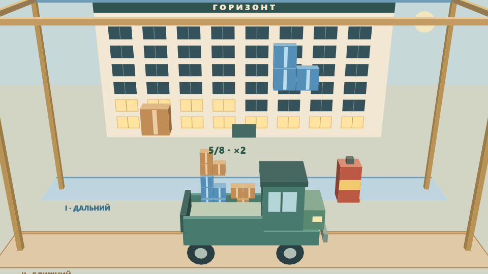

Интерактивная жизнь в квартале
Найди квартиру под свой стиль жизни
27 разных игровых сценариев: выращивайте цветы, ищите короткий путь и создавайте свой квартал. До 420 баллов.
Запустить демоШесть браузерных игр на примере ЖК «Горизонт». Покупатели знакомятся с кварталом, а риэлторы тренируются презентовать его преимущества.
Смотреть игры
Первые три игры объединены общим кошельком и магазином наград. Выберите приключение.
Интерактивная жизнь в квартале
27 разных игровых сценариев: выращивайте цветы, ищите короткий путь и создавайте свой квартал. До 420 баллов.
Запустить демо
Поиск преимуществ
Выберите персонажа и исследуйте объёмный парк: 28 тайников среди елей, берёз и жилых домов.
Запустить демо
Лабиринт от первого лица
10 ярких миров, удобная прогулка до развилки и 30 разных заданий. Найдите дорогу домой от первого лица.
Запустить демо
Конструктор квартиры
Перетаскивайте мебель в объёмную квартиру и меняйте её планировку.
Запустить демо
Симулятор продаж
Проведите диалог с одним из трёх покупателей и получите разбор.
Запустить демо
Аркада на двух планах
Управляйте пикапом на двух планах, ловите крупные грузы и сдавайте полный кузов с множителем. Максимум восемь коробок за рейс.
Запустить демоОт первого знакомства до отработки возражений.
| Формат | Аудитория | Время | Результат |
|---|---|---|---|
| Жизнь в квартале | Покупатели и риэлторы | 10–15 мин | 9 мини-игр, до 420 баллов |
| Поиск преимуществ | Покупатели и риэлторы | 15–25 мин | 28 находок, 7 районов, общие баллы |
| Лабиринт от первого лица | Покупатели и риэлторы | 10 уровней | 30 заданий и путь домой от первого лица |
| Конструктор квартиры | Покупатели | 3 мин | Конфигурация квартиры |
| Симулятор продаж | Риэлторы | 5 мин | Разбор диалога |
| Стройсборка | Покупатели | 90 секунд | Зажжённые окна, 3 сложности |
Покупатель сам находит паркинг, площадки и магазины и связывает их со своими привычками.
Квиз и конструктор помогают сформулировать требования к планировке перед консультацией.
Покупатель может оставить демозапрос на экскурсию. Риэлтор получает практику диалога и разбор ответов.